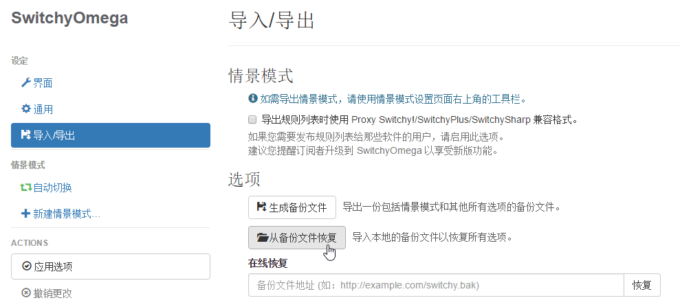
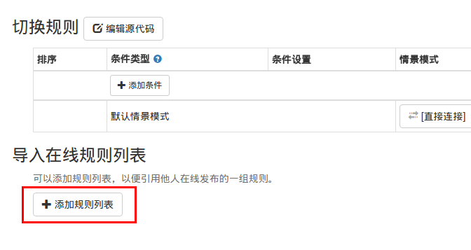
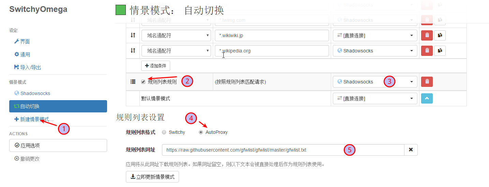

首先，您应该拥有一个 bluevpn pro 账号，然后再简单配置一下客户端，即可畅享网络，正版 bluevpn pro 账号从 这里 获得。
继续阅读您需要按上面方式配置好 Shadowsocks 客户端，并且设置好系统代理模式。
安装扩展
首先在 Shadowsocks 的图标上右键，确保 “启用系统代理” 被勾选，并且系统代理模式为 “全局模式” 。
如果您的 Chrome 未安装 SwitchyOmega 扩展，请将前往 Chrome 的 设置 > 高级设置 > 网络设置 > 更改代理服务器设置，若点击后弹出 Internet 属性 的设置窗口则表示当前 Chrome 使用的是系统代理。
然后通过 https://chrome.google.com/webstore/detail/padekgcemlokbadohgkifijomclgjgif 安装 Proxy SwitchyOmega 扩展。
如果您无法访问，也可以下载这个 Proxy-SwitchyOmega_v2.3.16.crx 文件，下载完成后在 设置 >> 扩展，直接把该 .crx 文件拖入窗口然后安装即可
扩展的配置(以下2选1即可)
1. 使用本站提供的已经设置好的备份直接恢复配置（推荐）
通过这个链接下载 switchyomega 的配置文件。
Windows 用户：OmegaOptions-Win-20170109.bak
MAC OS X 用户：OmegaOptions osx ver.bak
然后打开 Proxy SwitchyOmega 的设置，选择从备份文件恢复，然后选择刚才下载的文件，如图：

这时点击 switchyomega 图标，可以看到有三个模式，ss，ss-白名单，ss-黑名单。
三个的区别，当你的代理模式选中
注： 也可以选中系统代理，即使用上面所提到的系统代理。
按自己的需要使用，如果使用过程中发现，白名单下不该走代理的走代理了，或是黑名单下该走代理的没走，欢迎发工单，我们继续完善这个列表。
然后，记得一定要选择 系统代理 / ss / ss-白名单 / ss-黑名单 四者其中之一，选直连不会走代理的。
如果不准备使用本站提供的配置文件并且希望配合 GFWList 规则实现自动代理，请看下面内容（如果使用了本站提供的配置文件，请忽视下面的内容）
2. 设置配合 GFWList 实现自动切换的模式
按照下图所示：


之后可以可以通过选中该模式实现自动代理，如果特殊需要的域名也可以手动通过添加条件指定代理。